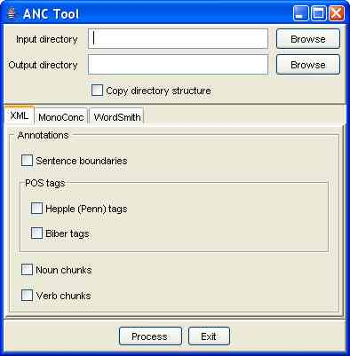
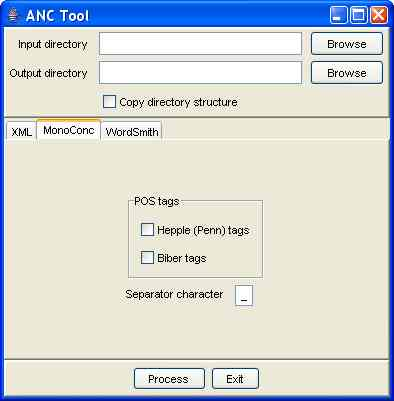
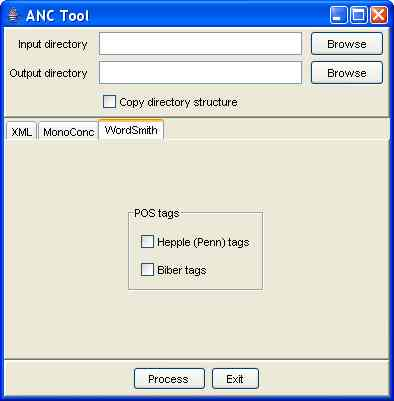

The ANC Tool is a Java program that transduces OANC and MASC texts and their GrAF standoff annotations into several different formats suitable for use with other systems and tools. ANC2Go provides the same functionality as the ANC Tool as a web service; the ANC Tool is intended for those who wish to run the transduction processes on their own machines.
For The OANC
The ANC GrAF Tool can be downloaded in a number of formats
- Java jar file.
- Windows executable
- Mac OS X executable. Requires OS X 10.6 (Snow Leopard) or later.
- Source code is available from the ANC Public Subversion server.
Note: Generating the Mac OS X and Windows executables from the Java jar files is still experimental. If the native executables appear to hang or quit unexpectedly see the instructions below for running the jar file from the command line with increased memory settings.
For MASC 3.0.0
MASC 3 uses a slightly updated GrAF representation and requires a separate ANCTool version. This version of the tool is only available as a Java jar file. Download
Output formats
The following output formats are supported.
- Inline XML
Converts texts with standoff GrAF annotations into inline XML encoded according to the XCES. - Word with part of speech
Converts texts with token annotations in GrAF to words with part of speech tags in a format compatible with programs such as MonoConc/MonoConc Pro. The format is word separator POS tag, where the separator is specified by the user. For example, if an underscore is specified as the separator, the result is word_NN. - Word with part of speech (WordSmith)
Converts texts with token annotations in GrAF to word with part of speech tag using the input format for the WordSmith Concordancer. - NLTK POS tagged corpus
Converts texts with token annotations in GrAF to the format required for input to NLTK using the NLTK TaggedCorpusReader - CoNLL
Converts GrAF annotations into the CoNLL IOB format - UIMA CAS
Converts GrAF annotations into a UIMA CAS document that can be loaded directly into UIMA. See the UIMA Tools page for more information.
Installation
Download the ANCTool and unzip the file to any convenient location.
Running
The ANCTool is an executable Java application that can be executed on most operating system by double clicking on the jar file. However, it is recommended that the jar file be started from the command line with the following command:
java -Xmx500M -jar ANCTool-x.y.z-jar.jar
Where x.y.z is the version number (i.e. 1.2.6). The -Xmx500M option increases the amount of memory Java will make available to the ANC Tool. If the ANC Tool appears to hang or quits abruptly run the jar file from the command line and increase the memory size.
The first time you run the ANC Tool you will be asked to select the ANC home directory. This is the root directory of your ANC installation and should include (at least) the ANC’s data directory.
Using
The XML Tab

- Select an input directory containing the ANC files to process. The program will recurse through all directories rooted at the input directory and process all the ANC files found.
- Select an output directory. The XML files that are created will be placed in the output directory. If the Copy directory structure check box is selected the directory structure of the input directory will be mirrored and directories will be created as needed. Otherwise all files will be created in the output directory. The default is to copy the directory structure. It is possible to select the the input directory as the output directory, but it is highly recommended that the input and output directories be separate directories.
- Select the annotations to include.
- Click the Process button.
The MonoConc Tab

- Select the input and output directory as above.
- Select the part of speech tags to include. The part of speech tags are the only annotations that can be included when generating text files.
- Select a separator character. This is the character that will be used to separate a word from its part of speech tag. The default character is the underscore. It is possible to use more than one character as the separator.
- Click the Process button.
The WordSmith Tab

- Select the input and output directory as above.
- Select the part of speech tags to include. The part of speech tags are the only annotations that can be included when generating text files.
- Click the Process button.